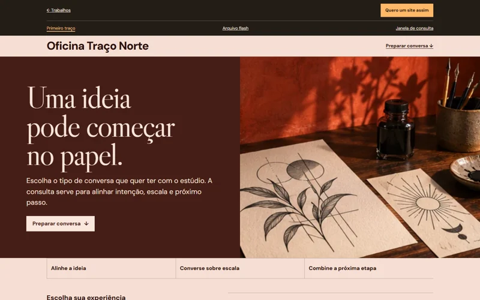
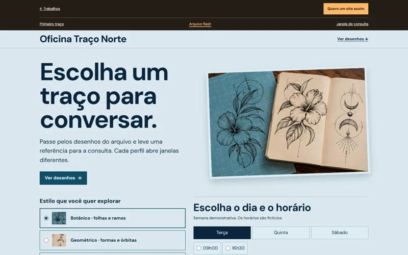
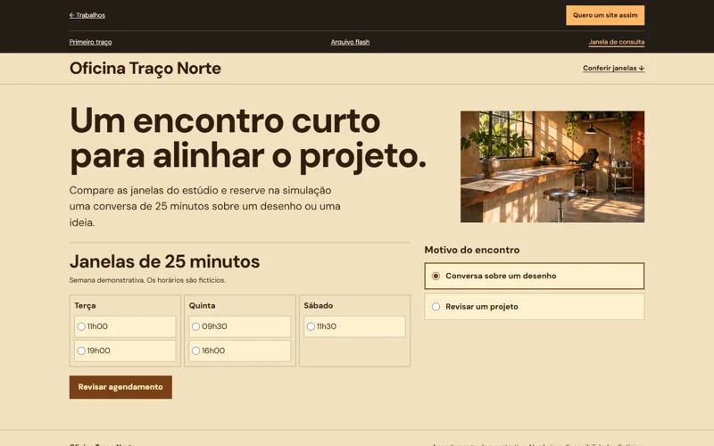

Oficina Traço Norte
Três maneiras de organizar uma visita · Estúdio de tatuagem

Primeiro traço
Escolha o tipo de conversa que quer ter com o estúdio. A consulta serve para alinhar intenção, escala e próximo passo.

Arquivo flash
Passe pelos desenhos do arquivo e leve uma referência para a consulta. Cada perfil abre janelas diferentes.

Janela de consulta
Compare as janelas do estúdio e reserve na simulação uma conversa de 25 minutos sobre um desenho ou uma ideia.